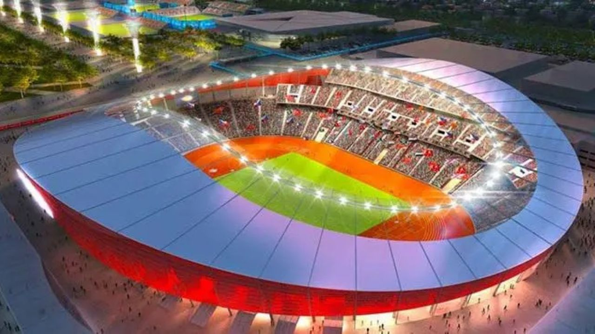

2023 Estadio Olímpico Atatürk Estambul Turquíaa

Nombre del estadio: Estadio Olímpico Atatürk
Ubicación: Estambul, Turquía
Capacidad: Aproximadamente 76,092 espectadores.
Inauguración: 2002.
Propietario: Gobierno de Turquía.
Características destacadas:
Diseño moderno: El estadio tiene un diseño circular con una estructura imponente.
Techado parcial: Cubre las gradas para proteger a los espectadores de las condiciones climáticas.
Pista de atletismo: Además de partidos de fútbol, el estadio también alberga eventos de atletismo.
Acceso y transporte: Está bien conectado con el transporte público de Estambul, incluyendo autobuses y metro.
Eventos importantes albergados en el Estadio Olímpico Atatürk
El estadio ha sido sede de varios eventos importantes, entre ellos:
Final de la UEFA Champions League 2005: Liverpool vs. AC Milan (conocida como la "Final de Milagro de Estambul").
Final de la UEFA Champions League 2023: Manchester City vs. Inter de Milán.
Eventos de atletismo: Ha albergado competiciones internacionales de atletismo.
Ubicación y cómo llegar
Dirección: Atatürk Olimpiyat Stadı, İkitelli, 34303, Estambul, Turquía.
Transporte público:
Metro (Metrobús): Línea Metrobús, estación Olimpiyat.
Autobús: Varias líneas de autobús conectan el estadio con el centro de Estambul.
Acceso en coche: El estadio cuenta con un amplio estacionamiento, pero se recomienda llegar temprano debido a la alta afluencia de público en eventos importantes.
Datos curiosos
El estadio lleva el nombre de Mustafa Kemal Atatürk, el fundador y primer presidente de la República de Turquía.
Fue construido como parte de la candidatura de Estambul para los Juegos Olímpicos de 2008, aunque la ciudad no fue seleccionada.
Es uno de los estadios más grandes de Turquía y ha sido sede de numerosos eventos deportivos y conciertos.